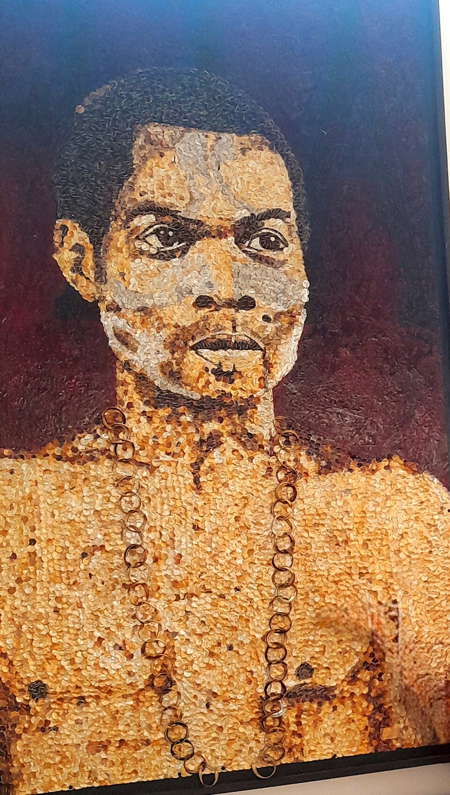
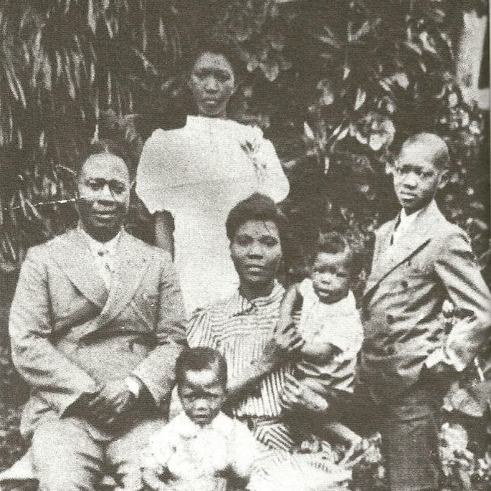
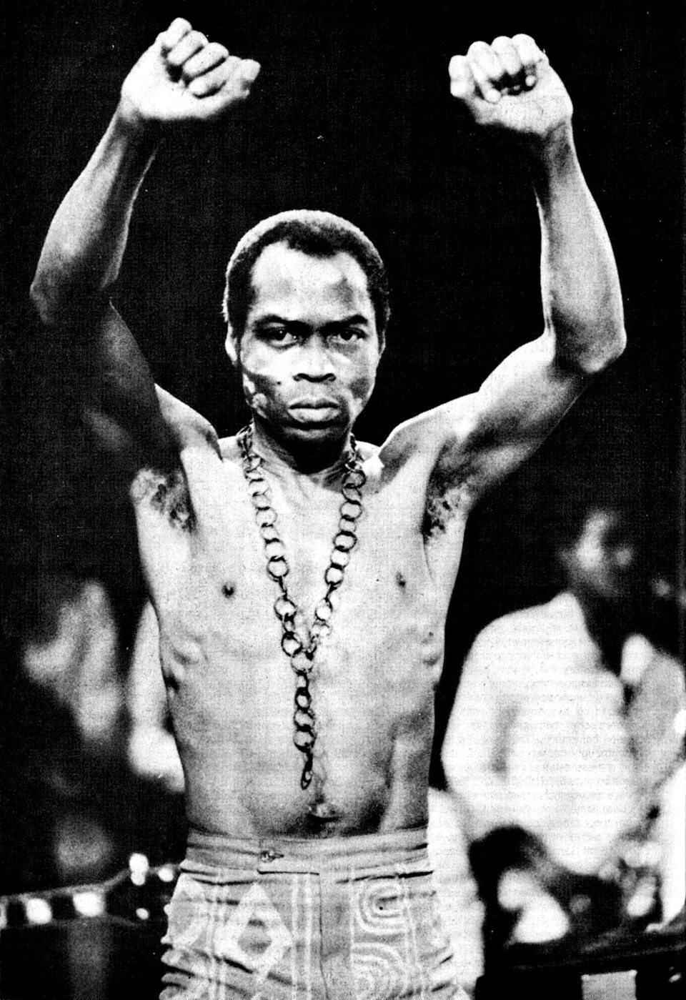
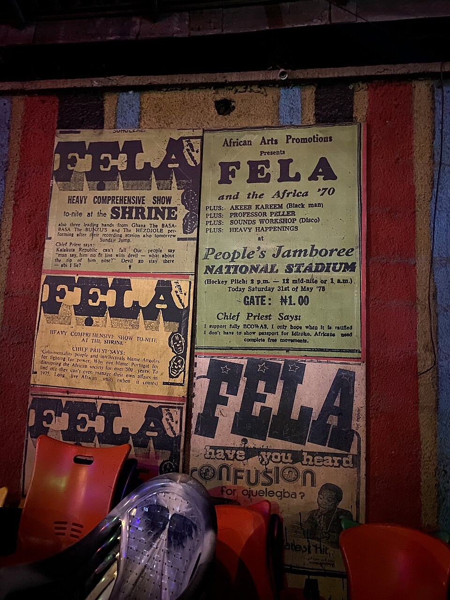
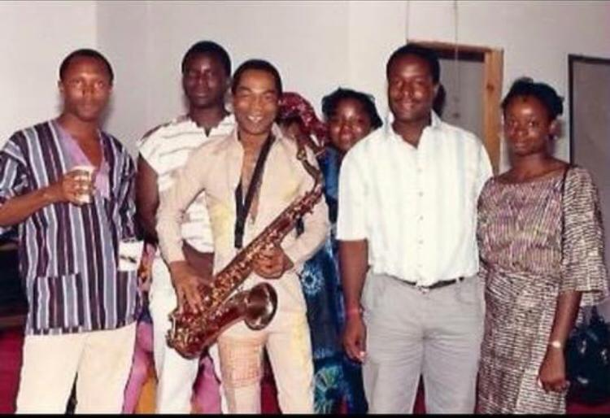
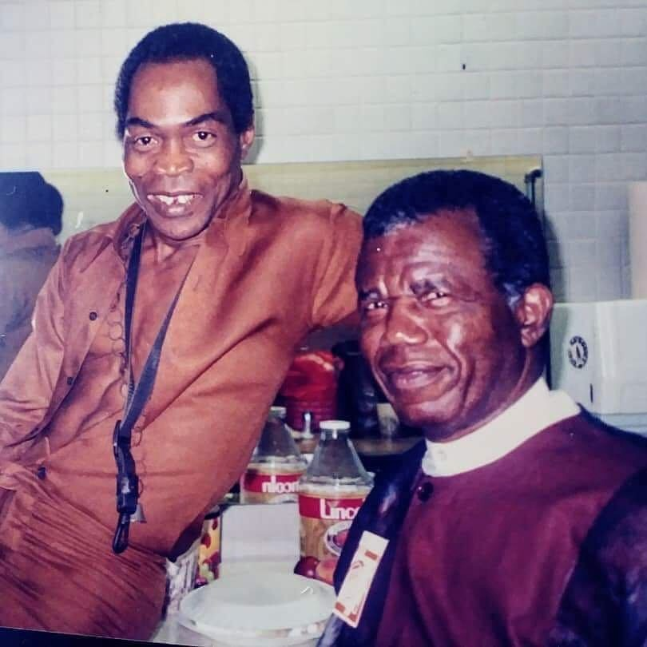
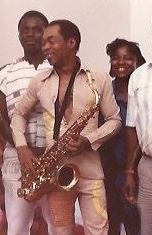

Veal, Michael E. Fela: The Life and Times of an African Musical Icon. Temple University Press, 2000.
Stewart, Alexander. "Make It Funky: Fela Kútì, James Brown and the Invention of Afrobeat." American Studies, Mid-American Studies Association 52, no. 4, 2013.
Afolayan, Adeshina and Toyin Falola. Fela Anikulapo-Kútì: Afrobeat, Rebellion, and Philosophy. Bloomsbury Academic, 2022.
Collins, John. Fela: Kalakuta Notes. Wesleyan University Press, 2015.
Coker, Niyi. A study of the music and social criticism of African musician Fela Anikulapo-Kútì. E. Mellen Press, 2004.
Barrett, Lindsay. "Fela Kuti: Chronicle of A Life Foretold." The Wire no. 169. March 1998.
Nigerian Pidgin: Nigerian Pidgin is an English-lexifier contact language that developed through interactions among speakers of different languages, particularly in contexts of trade, colonialism, and urban life. It incorporates vocabulary and linguistic features from English and Nigerian languages and became an important means of communication across ethnic and linguistic boundaries. Fela Kuti frequently used Nigerian Pidgin in his songs to reach wider audiences, particularly ordinary Nigerians, while challenging the linguistic elitism associated with colonial education and political power.
Rock and Roll Hall of Fame: In 2026, Fela Aníkúlápó-Kuti was selected for induction into the Rock and Roll Hall of Fame, becoming the first African solo artist to receive this distinction. Honored in the Early Influence category, his recognition acknowledges his pioneering role in developing Afrobeat and his enduring influence on popular music, political expression, and musicians around the world.
The Afrika Shrine: The Afrika Shrine was more than a performance venue; it was a cultural and political gathering place where Fela Kuti used music to challenge government corruption, military dictatorship, and social injustice. Fela began calling his Lagos performance venue the Shrine in 1971, initially at the Afro-Spot in Yaba. It subsequently relocated, including to the Empire Hotel in Mushin, which was attacked and burned by security forces in 1977. Today, the New Afrika Shrine, associated with Femi and Yeni Kuti, continues this legacy as a center for Afrobeat, cultural expression, and political consciousness.
"Zombie": Released in 1976, “Zombie” became one of Fela Kuti's most celebrated and politically provocative songs. Through biting satire, repetitive commands, and infectious Afrobeat rhythms, Fela portrayed Nigerian soldiers as mindless figures who obeyed orders without independent thought. The song became an enduring anthem of resistance to military authoritarianism and remains one of the most recognizable recordings in Afrobeat history.
Kalakuta Republic: Fela Kuti named his Lagos communal compound Kalakuta Republic in 1974, following his detention at the Alagbon Close police headquarters. The name originated from the nickname prisoners gave the communal cell in which he was held, reportedly referencing Calcutta in India. By declaring his compound an independent republic, Fela symbolically rejected the authority of Nigeria's military government. Kalakuta became a communal home for musicians, dancers, family members, and supporters, as well as a center of artistic experimentation and political resistance. In February 1977, Nigerian soldiers violently attacked and burned the compound.
Funmilayo Ransome-Kuti: Fela Kuti's mother, Funmilayo Ransome-Kuti (1900–1978), was one of Nigeria's most influential anticolonial activists, feminists, and political organizers. A pioneering educator and leader of the Abeokuta Women's Union, she mobilized thousands of women against unjust taxation, colonial authority, and women's political exclusion. She championed women's rights, Nigerian independence, and Pan-African solidarity. In 1977, she was gravely injured during the military assault on Kalakuta Republic and died the following year. Her political activism profoundly influenced her son's understanding of resistance and social justice.
Dodan Barracks: Located in Lagos, Dodan Barracks served as the seat of Nigeria's military government during much of the period of military rule between 1966 and 1991. It symbolized the political and military authority that Fela Kuti repeatedly challenged. Following his mother's death in 1978, Fela and his supporters carried her coffin to Dodan Barracks in a dramatic protest against the military government, holding the state responsible for the violence that ultimately claimed her life.
Image 1: Portrait of Fela Aníkúlápó-Kútì

A portrait of Migerian music pioneer, Fela Aníkúlápó-Kútì, on display at Nike Art Gallery in Abeokuta, Nigeria. Citation for Image 1
Image 2: Kútì Family Portrait

Caption:Reverend Israel Oludotun Ransome- Kútì' and Funmilayo Ransome- Kútì' seated. Dolu is standing behind them, Olikoye stands to the right, and Fela in foreground. The baby in Funmilayo's arms is Beko. Citation for Image 2
Image 3: Fela Kútì on stage

Caption: Fela Kútì' photographed on stage. Distributed as a promotional photo in 1986. Citation for Image 3
Image 4: Promotional posters

Caption: Poster from Fela Shrine promoting events in the 1970s. Citation for Image 4
Image 5: Fela Kútì, backstage in 1989/89

Caption: A photo from a Fela Kútì' concert in Hartford, Connecticut, likely in 1988 or 1989. From left: Okey Ndibe, Chidi Achebe, Fela Kútì', Nwando Achebe, [unknown], Yewande Olubummo. Citation for Image 5
Image 6: Fela Kútì and Chinua Achebe

Caption: A photo taken by Nwando Achebe of Fela Kuti and her father, Chinua Achebe, at a Fela concert at University of Massachusetts in 1992. Citation.
Image 7: Fela Kútì at a concert

Caption: Fela Kútì at a concert in Hartford, Connecticut, USA. Citation for Image 7